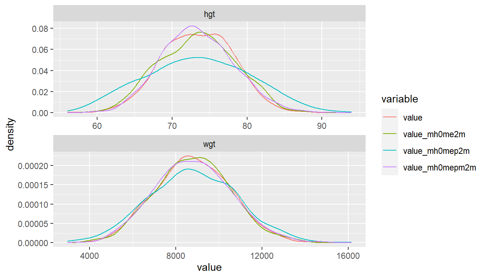

Chapter 9 Tables and Graphs
9.1 R Base Plots
9.1.1 Plot Curve, Line and Points
Go back to fan’s REconTools Package, R4Econ Repository (bookdown site), or Intro Stats with R Repository.
Work with the R plot function.
9.1.1.1 One Point, One Line and Two Curves
- r curve on top of plot
- r plot specify pch lty both scatter and line
- r legend outside
Jointly plot:
- 1 scatter plot
- 1 line plot
- 2 function curve plots
#######################################################
# First, Some common Labels:
#######################################################
# Labeling
st_title <- paste0('Scatter, Line and Curve Joint Ploting Example Using Base R\n',
'plot() + curve(): x*sin(x), cos(x), sin(x)*cos(x), sin(x)+tan(x)+cos(x)')
st_subtitle <- paste0('https://fanwangecon.github.io/',
'R4Econ/tabgraph/inout/htmlpdfr/fs_base_curve.html')
st_x_label <- 'x'
st_y_label <- 'f(x)'
#######################################################
# Second, Generate the Graphs Functions and data points:
#######################################################
# x only used for Point 1 and Line 1
x <- seq(-1*pi, 1*pi, length.out=25)
# Line (Point) 1: Generate X and Y
y1 <- x*sin(x)
st_point_1_y_legend <- 'x*sin(x)'
# Line 2: Line Plot
y2 <- cos(x)
st_line_2_y_legend <- 'cos(x)'
# Line 3: Function
fc_sin_cos_diff <- function(x) sin(x)*cos(x)
st_line_3_y_legend <- 'sin(x)*cos(x)'
# Line 4: Function
fc_sin_cos_tan <- function(x) sin(x) + cos(x) + tan(x)
st_line_4_y_legend <- 'sin(x) + tan(x) + cos(x)'
#######################################################
# Third, set:
# - point shape and size: *pch* and *cex*
# - line type and width: *lty* and *lwd*
#######################################################
# http://www.sthda.com/english/wiki/r-plot-pch-symbols-the-different-point-shapes-available-in-r
# http://www.sthda.com/english/wiki/line-types-in-r-lty
# for colors, see: https://fanwangecon.github.io/M4Econ/graph/tools/fs_color.html
st_point_1_blue <- rgb(57/255,106/255,177/255)
st_line_2_red <- rgb(204/255, 37/255, 41/255,)
st_line_3_black <- 'black'
st_line_4_purple <- 'orange'
# point type
st_point_1_pch <- 10
# point size
st_point_1_cex <- 2
# line type
st_line_2_lty <- 'dashed'
st_line_3_lty <- 'dotted'
st_line_4_lty <- 'dotdash'
# line width
st_line_2_lwd <- 3
st_line_3_lwd <- 2.5
st_line_4_lwd <- 3.5
#######################################################
# Fourth: Share xlim and ylim
#######################################################
ar_xlim = c(min(x), max(x))
ar_ylim = c(-3.5, 3.5)
#######################################################
# Fifth: the legend will be long, will place it to the right of figure,
#######################################################
par(new=FALSE, mar=c(5, 4, 4, 10))
#######################################################
# Sixth, the four objects and do not print yet:
#######################################################
# pdf(NULL)
# Graph Scatter 1
plot(x, y1, type="p",
col = st_point_1_blue,
pch = st_point_1_pch, cex = st_point_1_cex,
xlim = ar_xlim, ylim = ar_ylim,
panel.first = grid(),
ylab = '', xlab = '', yaxt='n', xaxt='n', ann=FALSE)
pl_scatter_1 <- recordPlot()
# Graph Line 2
par(new=T)
plot(x, y2, type="l",
col = st_line_2_red,
lwd = st_line_2_lwd, lty = st_line_2_lty,
xlim = ar_xlim, ylim = ar_ylim,
ylab = '', xlab = '', yaxt='n', xaxt='n', ann=FALSE)
pl_12 <- recordPlot()
# Graph Curve 3
par(new=T)
curve(fc_sin_cos_diff,
col = st_line_3_black,
lwd = st_line_3_lwd, lty = st_line_3_lty,
from = ar_xlim[1], to = ar_xlim[2], ylim = ar_ylim,
ylab = '', xlab = '', yaxt='n', xaxt='n', ann=FALSE)
pl_123 <- recordPlot()
# Graph Curve 4
par(new=T)
curve(fc_sin_cos_tan,
col = st_line_4_purple,
lwd = st_line_4_lwd, lty = st_line_4_lty,
from = ar_xlim[1], to = ar_xlim[2], ylim = ar_ylim,
ylab = '', xlab = '', yaxt='n', xaxt='n', ann=FALSE)
pl_1234 <- recordPlot()
# invisible(dev.off())
#######################################################
# Seventh, Set Title and Legend and Plot Jointly
#######################################################
# CEX sizing Contorl Titling and Legend Sizes
fl_ces_fig_reg = 1
fl_ces_fig_small = 0.75
# R Legend
title(main = st_title, sub = st_subtitle, xlab = st_x_label, ylab = st_y_label,
cex.lab=fl_ces_fig_reg,
cex.main=fl_ces_fig_reg,
cex.sub=fl_ces_fig_small)
axis(1, cex.axis=fl_ces_fig_reg)
axis(2, cex.axis=fl_ces_fig_reg)
grid()
# Legend sizing CEX
legend("topright",
inset=c(-0.4,0),
xpd=TRUE,
c(st_point_1_y_legend, st_line_2_y_legend, st_line_3_y_legend, st_line_4_y_legend),
col = c(st_point_1_blue, st_line_2_red, st_line_3_black, st_line_4_purple),
pch = c(st_point_1_pch, NA, NA, NA),
cex = fl_ces_fig_small,
lty = c(NA, st_line_2_lty, st_line_3_lty, st_line_4_lty),
lwd = c(NA, st_line_2_lwd, st_line_3_lwd,st_line_4_lwd),
title = 'Legends',
y.intersp=2)We used recordplot() earlier. So now we can print just the first two constructed plots.
#######################################################
# Eighth, Plot just the first two saved lines
#######################################################
# mar: margin, bottom, left, top, right
pl_12
# R Legend
par(new=T)
title(main = st_title, sub = st_subtitle, xlab = st_x_label, ylab = st_y_label,
cex.lab = fl_ces_fig_reg,
cex.main = fl_ces_fig_reg,
cex.sub = fl_ces_fig_small)
# Legend sizing CEX
par(new=T)
legend("topright",
inset=c(-0.4,0),
xpd=TRUE,
c(st_point_1_y_legend, st_line_2_y_legend),
col = c(st_point_1_blue, st_line_2_red),
pch = c(st_point_1_pch, NA),
cex = fl_ces_fig_small,
lty = c(NA, st_line_2_lty),
lwd = c(NA, st_line_2_lwd),
title = 'Legends',
y.intersp=2)
9.2 Write and Read Plots
9.2.1 Import and Export Images
Go back to fan’s REconTools Package, R4Econ Repository (bookdown site), or Intro Stats with R Repository.
Work with the R plot function.
9.2.1.1 Export Images Different Formats with Plot()
9.2.1.1.1 Generate and Record A Plot
Generate a graph and recordPlot() it. The generated graph does not have legends Yet. Crucially, there are no titles, legends, axis, labels in the figures. As we stack the figures together, do not add those. Only add at the end jointly for all figure elements together to control at one spot things.
#######################################################
# First, Strings
#######################################################
# Labeling
st_title <- paste0('Scatter, Line and Curve Joint Ploting Example Using Base R\n',
'plot() + curve():sin(x)*cos(x), sin(x)+tan(x)+cos(x)')
st_subtitle <- paste0('https://fanwangecon.github.io/',
'R4Econ/tabgraph/inout/htmlpdfr/fs_base_curve.html')
st_x_label <- 'x'
st_y_label <- 'f(x)'
#######################################################
# Second, functions
#######################################################
fc_sin_cos_diff <- function(x) sin(x)*cos(x)
st_line_3_y_legend <- 'sin(x)*cos(x)'
fc_sin_cos_tan <- function(x) sin(x) + cos(x) + tan(x)
st_line_4_y_legend <- 'sin(x) + tan(x) + cos(x)'
#######################################################
# Third, patterns
#######################################################
st_line_3_black <- 'black'
st_line_4_purple <- 'orange'
# line type
st_line_3_lty <- 'dotted'
st_line_4_lty <- 'dotdash'
# line width
st_line_3_lwd <- 2.5
st_line_4_lwd <- 3.5
#######################################################
# Fourth: Share xlim and ylim
#######################################################
ar_xlim = c(-3, 3)
ar_ylim = c(-3.5, 3.5)
#######################################################
# Fifth: Even margins
#######################################################
par(new=FALSE)
#######################################################
# Sixth, the four objects and do not print yet:
#######################################################
# Graph Curve 3
par(new=T)
curve(fc_sin_cos_diff,
col = st_line_3_black,
lwd = st_line_3_lwd, lty = st_line_3_lty,
from = ar_xlim[1], to = ar_xlim[2], ylim = ar_ylim,
ylab = '', xlab = '', yaxt='n', xaxt='n', ann=FALSE)
# Graph Curve 4
par(new=T)
curve(fc_sin_cos_tan,
col = st_line_4_purple,
lwd = st_line_4_lwd, lty = st_line_4_lty,
from = ar_xlim[1], to = ar_xlim[2], ylim = ar_ylim,
ylab = '', xlab = '', yaxt='n', xaxt='n', ann=FALSE)9.2.1.1.2 Generate Large Font and Small Font Versions of PLot
Generate larger font version:
# Replay
pl_curves_save
#######################################################
# Seventh, Set Title and Legend and Plot Jointly
#######################################################
# CEX sizing Contorl Titling and Legend Sizes
fl_ces_fig_reg = 0.75
fl_ces_fig_leg = 0.75
fl_ces_fig_small = 0.65
# R Legend
title(main = st_title, sub = st_subtitle, xlab = st_x_label, ylab = st_y_label,
cex.lab=fl_ces_fig_reg,
cex.main=fl_ces_fig_reg,
cex.sub=fl_ces_fig_small)
axis(1, cex.axis=fl_ces_fig_reg)
axis(2, cex.axis=fl_ces_fig_reg)
grid()
# Legend sizing CEX
legend("topleft",
bg="transparent",
bty = "n",
c(st_line_3_y_legend, st_line_4_y_legend),
col = c(st_line_3_black, st_line_4_purple),
pch = c(NA, NA),
cex = fl_ces_fig_leg,
lty = c(st_line_3_lty, st_line_4_lty),
lwd = c(st_line_3_lwd,st_line_4_lwd),
y.intersp=2)Generate smaller font version:
# Replay
pl_curves_save
#######################################################
# Seventh, Set Title and Legend and Plot Jointly
#######################################################
# CEX sizing Contorl Titling and Legend Sizes
fl_ces_fig_reg = 0.45
fl_ces_fig_leg = 0.45
fl_ces_fig_small = 0.25
# R Legend
title(main = st_title, sub = st_subtitle, xlab = st_x_label, ylab = st_y_label,
cex.lab=fl_ces_fig_reg,
cex.main=fl_ces_fig_reg,
cex.sub=fl_ces_fig_small)
axis(1, cex.axis=fl_ces_fig_reg)
axis(2, cex.axis=fl_ces_fig_reg)
grid()
# Legend sizing CEX
legend("topleft",
bg="transparent",
bty = "n",
c(st_line_3_y_legend, st_line_4_y_legend),
col = c(st_line_3_black, st_line_4_purple),
pch = c(NA, NA),
cex = fl_ces_fig_leg,
lty = c(st_line_3_lty, st_line_4_lty),
lwd = c(st_line_3_lwd,st_line_4_lwd),
y.intersp=2)9.2.1.1.3 Save Plot with Varying Resolutions and Heights
Export recorded plot.
A4 paper is 8.3 x 11.7, with 1 inch margins, the remaining area is 6.3 x 9.7. For figures that should take half of the page, the height should be 4.8 inch. One third of a page should be 3.2 inch. 6.3 inch is 160mm and 3 inch is 76 mm. In the example below, use
# Store both in within folder directory and root image directory:
# C:\Users\fan\R4Econ\tabgraph\inout\_img
# C:\Users\fan\R4Econ\_img
# need to store in both because bookdown and indi pdf path differ.
# Wrap in try because will not work underbookdown, but images already created
ls_spt_root <- c('..//..//', '')
spt_prefix <- '_img/fs_img_io_2curve'
for (spt_root in ls_spt_root) {
# Changing pointsize will not change font sizes inside, just rescale
# PNG 72
try(png(paste0(spt_root, spt_prefix, "_w135h76_res72.png"),
width = 135 , height = 76, units='mm', res = 72, pointsize=7))
print(pl_curves_large)
dev.off()
# PNG 300
try(png(paste0(spt_root, spt_prefix, "_w135h76_res300.png"),
width = 135, height = 76, units='mm', res = 300, pointsize=7))
print(pl_curves_large)
dev.off()
# PNG 300, SMALL, POINT SIZE LOWER
try(png(paste0(spt_root, spt_prefix, "_w80h48_res300.png"),
width = 80, height = 48, units='mm', res = 300, pointsize=7))
print(pl_curves_small)
dev.off()
# PNG 300
try(png(paste0(spt_root, spt_prefix, "_w160h100_res300.png"),
width = 160, height = 100, units='mm', res = 300))
print(pl_curves_large)
dev.off()
# EPS
setEPS()
try(postscript(paste0(spt_root, spt_prefix, "_fs_2curve.eps")))
print(pl_curves_large)
dev.off()
}## Error in png(paste0(spt_root, spt_prefix, "_w135h76_res72.png"), width = 135, :
## unable to start png() device
## Error in png(paste0(spt_root, spt_prefix, "_w135h76_res300.png"), width = 135, :
## unable to start png() device
## Error in png(paste0(spt_root, spt_prefix, "_w80h48_res300.png"), width = 80, :
## unable to start png() device
## Error in png(paste0(spt_root, spt_prefix, "_w160h100_res300.png"), width = 160, :
## unable to start png() device
## Error in postscript(paste0(spt_root, spt_prefix, "_fs_2curve.eps")) :
## cannot open file '..//..//_img/fs_img_io_2curve_fs_2curve.eps'9.2.1.1.4 Low and High Resolution Figure
The standard resolution often produces very low quality images. Resolution should be increased. See figure comparison.


9.2.1.1.5 Smaller and Larger Figures
Smaller and larger figures with different font size comparison. Note that earlier, we generated the figure without legends, labels, etc first, recorded the figure. Then we associated the same underlying figure with differently sized titles, legends, axis, labels.